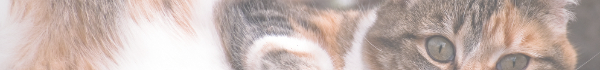

Volunteer
From in-shelter support to at-home foster care, volunteers support every facet of our work. Together, we're creating a more humane world for animals.
How to become a volunteer:
- Be 18 years of age or older. If you are younger than 18, you must have a parent present to join in volunteer activities.
- Read and agree with our Volunteer Guidelines.
- Sign up for and attend a Volunteer Orientation.